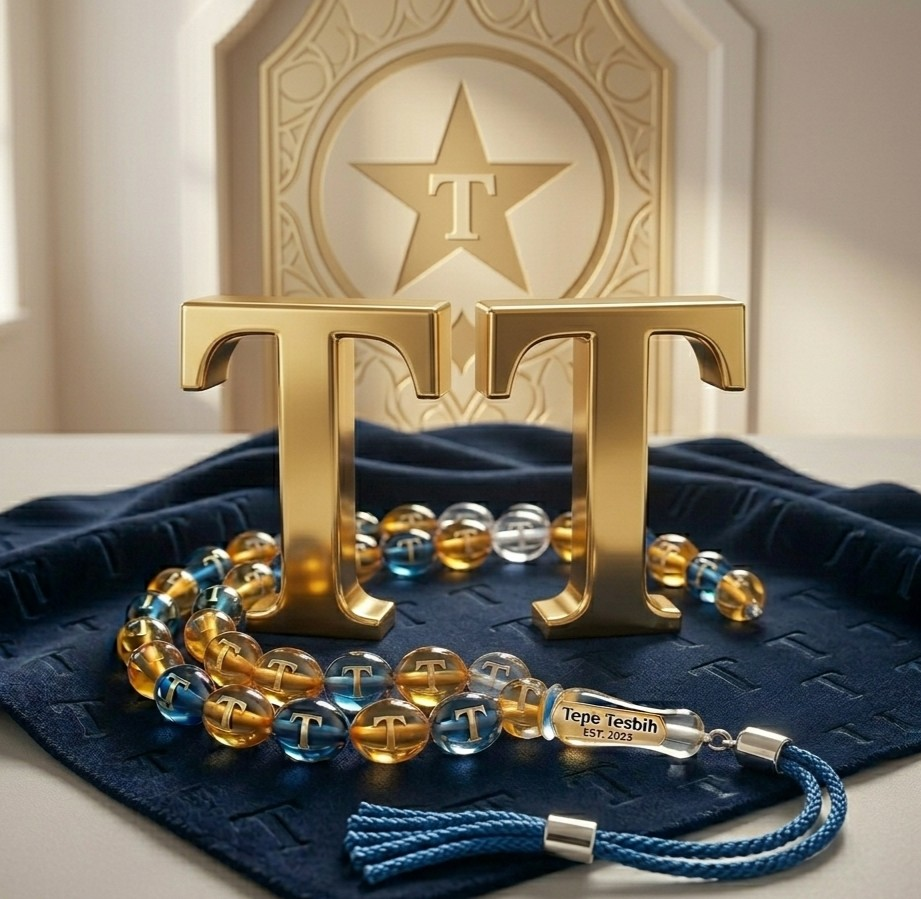

Her çekimde kaliteyi ve altın değerindeki ustalığı hisset.
Kırmızının en doğal hali.
Ürün Parlement mavisidir.
Ürün %100 el oymasıdır
Ürün Garantilidir.
Özel damarlı yapı.
Arpa Kesim Kuka.
Nadir bulunan doku.
Kokulu ve kaliteli.
Ürünler Kan Ağacıdır.
Islak Torna işlemesi.
Ürünler Garantilidir.
Torna işlemesi.
Ürünler Garantilidir